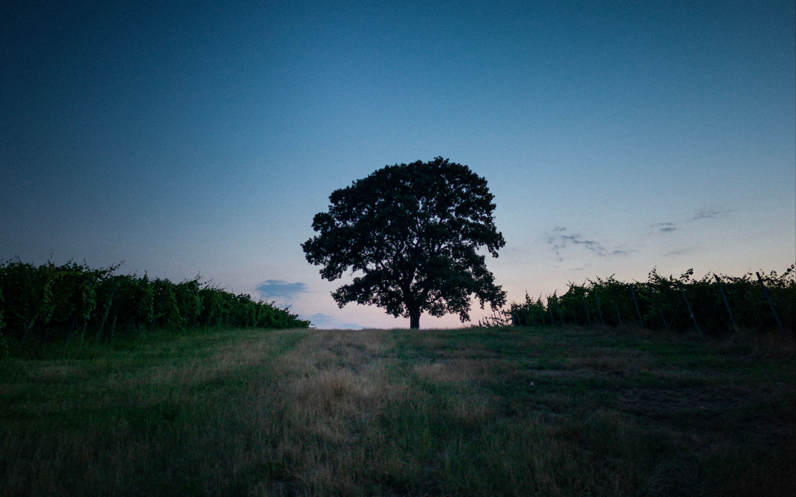

Desenvolvemos projetos e soluções customizadas na área de tecnologia para gerar benefícios e resultados satisfatórios para nossos clientes. Possuímos profissionais altamente qualificados, todos com mais de 15 anos de experiência nos mais diversos segmentos.


A presente proposta pretende propiciar o incremento a metodologias didáticas de ensino básico de lógica de programação de computadores, permitindo a inclusão de alunos com a ausência total ou parcial da visão, garantindo-lhes maior grau de independência:

O aluno cego, com o auxílio de peças tridimensionais e cartões impressos em Braille, monta um fluxograma de algum algorítmo;

Com um aparelho fotográfico, imagens retiradas do fluxograma são enviadas para a aplicação que fará a interpretação do algorítmo;

Após a foto ser enviada para a aplicação, a mesma inicia o processo de reconhecimento do texto e dos formatos;

O programa gera um arquivo de texto contendo o código fonte do algoritmo arquitetado pelo aluno, seguindo a sintaxe da linguagem de programação Portugol;

O arquivo poderá ser usado para fins didáticos, servindo como uma ferramenta avaliadora para o professor, ou como um material de estudo para o aluno.
Considerando-se que o avanço tecnológico proporcionada pela constante
globalização e a ênfase no uso de redes de computadores tornam o acesso
às informações algo cada vez mais
primordial, é fundamental incitar a busca por estratégias pedagógicas que
contribuam para a aquisição de conhecimento a todos os alunos, especialmente a
aqueles com deficiência visual. As
características sensoriais que alunos cegos ou com baixa visão apresentam
acentuam, sobretudo, as barreiras e dificuldades que o ensino tradicional brasileiro demonstra
atualmente em sua constituição.
Isso pode ser evidenciado como uma consequência da existente metodologia de
preparação tendencialmente visual a que os alunos se encontram a mercê nas
instituições de ensino. Além
da assimilação de conceitos teóricos, o interesse por assuntos
práticos, como a programação de computadores, sempre foi um desafio a ser
enfrentado e, por mais que existam instituições
que adotem esse conteúdo como uma disciplina escolar, o aprendizado tende a ser pouco
efetivo para o aluno com deficiência visual.
Em vista disso, é mister
proporcionar ferramentas e técnicas
que permitam às pessoas com deficiência visual inserirem-se no mundo da
programação de computadores e oferecer sua perspectiva de mundo. Sendo assim, o
presente trabalho propõe-se a oferecer
um protótipo de uma ferramenta tátil de programação juntamente com
recursos de reconhecimento de imagens e caracteres utilizando deep learning, que executa a
conversão das imagens e caracteres
reconhecidos para código fonte em uma linguagem de programação, que
poderá ser compilado em alguma IDE, gerando-se o respectivo código
executável. Concomitantemente, a criação
dessas ferramentas municiará educadores da área da Informática com recursos
didáticos específicos ao ensino tecnológico de alunos com deficiência
visual
Meu nome é João Pedro Civita e sou estudante do Instituto Federal de São
Paulo (IFSP). Essa proposta foi desenvolvida como um projeto de iniciação
científica, realizado por meio do Programa
Institucional de Bolsas de Iniciação Científica e Tecnológica do
Instituto Federal de Educação Ciência e Tecnologia de São Paulo
(PIBIFSP). Todo o seu desenvolvimento foi realizado
nas abrangências do campus do instituto.
Para mais informações,
entre em contato pelo e-mail
jpcivita2011@hotmail.com.
© Flowchart. Todos os direitos reservados..